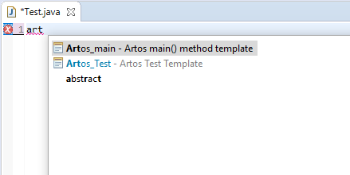

1. System Setup¶
1.1. System Requirements¶
Platform
- Windows, Linux, MAC or any platform which can run Java 8 or above.
JDK
- Artos can be integrated with any Java project compiled with JDK 8U45 or higher.
1.2. Add Artos Jar as a dependency¶
Non-Maven Projects
- Download latest Artos jar from location - Artos_Maven_Repository.
- Add jar to project build path.
Maven Projects
- Copy latest jar dependency xml block from location - Artos_Maven_Repository.
- Add dependency to project pom.xml file
1 2 3 4 5 6
<!-- Example dependency block --> <dependency> <groupId>com.theartos</groupId> <artifactId>artos</artifactId> <version>x.x.xx</version> </dependency>
1.3. Eclipse SDK¶
1.3.1. Install ANSI plug-in for Linux OS¶
- Go to Eclipse SDK => Help => Eclipse Marketplace.
- Find “ANSI escape in console” plug-in.
- Install plug-in.
- Restart Eclipse SDK.
1.3.2. Configure test templates¶
The use of a Java template increases consistency and test development speed. Templates can be modified to suite business requirements.
Import default templates:
Download file template.xml from location : Artos_Eclipse_Template .
In Eclipse SDK browse to Window => Preferences => Java => Editor => Templates.
Click on Import button.
Import downloaded template.xml file.
Two templates will be added
- Artos_Runner
- Artos_TestCase
Use template:
Create new Java class.
Select and delete all the content of the class.
Type art and press CTRL+SPACE.
Template suggestion list will appear so user can select appropriate template.
